What: Conference, VCs, Startups, Finance, Business, Lightning Talks
Date: June 18th - June 19th
Time: 8 AM - 11 PM
Where: Trinitatis Church, Cologne // Trinitatiskirche, Filzengraben 6, 50676 Köln
Entrance: 25 EUR per participant ticket / 50 EUR visitor ticket
What's it About?
Startups, techs, investors and entrepreneurs will meet in a
creative atmosphere to network and discuss hot topics with
other technology industry professionals sharing similar
passions and social interests.
The following items are part of the Startup and Biz program:
Jörg Binnenbrücker
Jörg earned a degree in law and economics from the University of Bonn and is a licensed lawyer. He was a senior investment manager at High-Tech Gründerfonds investing in early-stage companies from the ICT sector. Prior to that, he worked as a manager for PriceWaterhouseCoopers. Jörg successfully led the investment business of M. DuMont Schauberg as founding partner and CEO, thereby significantly contributing to the development of digital strategy at the publishing house. At the end of 2012 he founded the Multi- Corporate Fund Capnamic Ventures which he leads as managing partner.
An active business angel and entrepreneur himself Jörg is constantly striving to improve the conditions for startups and strengthen the entrepreneurial spirit in our society. Being an expert within early stage investments he was awarded the title „Investor of the Decade“ by the German magazine Gründerszene in 2011.
 Sebastian Deutsch
Sebastian Deutsch
Sebastian Deutsch is one of the founders of 9elements. He started hacking at a young age on a Commodore Amiga computer. From then on he developed software on various platforms - but he loves the web the most. He enjoys programming Ruby on Rails and loves to create new interfaces using technologies like HTML5 and JavaScript. Sebastian has a university degree in Computer Science from the Technische Universität Dortmund. When he is not hacking he loves to ski in the alps. His talk: KPIs for Nerds - All about KPIs you ever wanted to know (but was always afraid to ask).
Ingo Franz
Ingo Franz is partner at Creathor Venture, an European venture fund with offices in Germany, Switzerland and Scandinavia, investing in all VC situations with particular focus on early stage. Ingo is venture investor in IT/ Internet/software companies for 15 years. Prior to joining Creathor Venture, Ingo was Investment Manager at Technologieholding VC and later Investment Director with 3i. He has served as a director on boards of German, French, US companies and has a successful track record including IPO and trade-sale transactions. Ingo has spent several years abroad working in industry on software, engineering and strategy consulting assignments. Ingo holds a master degree in engineering from the Technical University of Darmstadt and a master degree in Business Administration (lic. Oec.) from the University of St. Gallen.
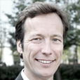Klemens Gaida
Klemens Gaida is a telecoms engineer with a PhD in mobile communication systems & services. After being partner at a management consultancy from 1993-2001 and manager at a global mobile network operator from 2001-2009 he founded the Internet incubator & seedfund 1stMOVER in Düsseldorf together with Peter Hornik. In summer 2012 Klemens established a strategic partnership with full service mobile solution provider Appseleration and gave 1stMOVER a new focus on the mobile internet market. Klemens and Peter have previously built several web companies in the areas of e-commerce, web-to-print and online video amongst others.
Ulrich Hafenbradl
Ulrich Hafenbradl is the co-founder and Managing Director of Trusted Shops GmbH. He graduated in economics from the universities of Mannheim and Cologne. Before founding Trusted Shops GmbH he was an E-commerce consultant.
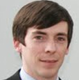Thomas Herzog
Thomas Herzog studied Corporate Management and Economics at Zeppelin University with a strong emphasis on Innovation Management. After extensive work experience as a product manager (Affinion International) and consultant for the financial industry (zeb/rolfes.schierenbeck.associates) he left the corporate world 2009 and started to built startups. Besides some own bootstrapped projects he was one of the first employees for SponsorPay and worked for well known companies like Jamba. At Innovestment he is responsible for Business Dev and Product.
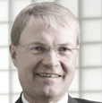Matthias Hornberger
As CFO of Kizoo Technology Ventures Matthias is together with two colleagues in charge of their Investment Business. KIZOO (www.kizoo.com) helps young start-up teams grow. They provide seed and early stage financing of up to € 1 Mio in the first round with a focus on SaaS, Internet & Mobile Services and Social Applications. Matthias has been part of the senior management team of Kizoo and the predecessor WEB.DE since the IPO of the AG in 2000. He has a long-standing experience in the investment sector and his comprehensive knowledge of typical features of successful business models on the Internet. He also is CEO of the Karlsruhe based High-Tech-Entrepreneur Network Cyberforum e.V. With 1000+ members it is one of the leading IT-related networks in Europe.
Peter Hornik
During his studies of economics Peter Hornik already discovered his enthusiasm for entrepreneurship and creating new businesses. Consequently, he founded his first company epos24 GmbH, a panEuropean service provider for data base solutions for car dealers, where he was managing director from 2001 to 2008. In 2006 Peter did his first angel investment and in 2008 he established the Switzerland-based cap-z-partners GmbH as a holding company for more angel investments. Since then Peter Hornik supports young founders with seed investments and advisory services. In 2012 he founded together with Klemens Gaida and Ralf Lauterbach 1stMOVER, an incubator and seedfund with focus on mobile services & solutions. Located in Düsseldorf 1stMOVER offers a wide range of services for entrepreneurs in addition to traditional seed investments.
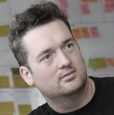Alexander Jansen
Alex is a consultant, serial entrepreneur and co-founder of Business Visuals. Business Visuals was founded in the beginning of April 2013 and provides printed materials for workshops - covering the most common tools for Design Thinking, Lean Startup, and Business Modelling. Business Visuals is his 9th Startup. In his role as a consultant he helps his clients to be more creative, innovative or simply productive in their business models, new products or day to day business by bringing together interdisciplinary, intercultural teams to work on the problem at hand and guide them through agile processes and projects. He holds a MSc. in computer science and music from TU München. He also teaches innovation management for BA students at SRH Hochschule Berlin.
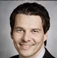David Jetel
David Jetel has a business degree and is an active entrepreneur since 2002.He is responsible for the ICT-Portfolio of Sirius Venture Partners and expert for market- and technological issues. Currently he manages some portfolio-companies in the area of e-commerce, webtv and convienence foods as a member of the advisory boards.
 Karl-Heinz Land
Karl-Heinz Land
Karl-Heinz Land, Digital Darwinist and Evangelist, founder of neuland; provides consultancy services concerning the Digital Vision & Transformation. Key topics: Social Media, Mobile, Big Data, Analytics and e-Commerce. He is a digital visionary who has received multiple business awards and was voted a “Technology Pioneer“ in 2006 by the World Economic Forum in Davos (WEF) and Time Magazin. For over 25 years, Karl-Heinz Land has worked as Senior Executive, General Manager, CEO, Executive Vice President EMEA in worldwide leading technology enterprises – amongst others Oracle, BusinessObjects, Microstrategy, VoiceObjects.
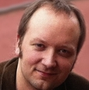Matthias Lübken
Matthias Lübken is the director of software development at Adcloud in Cologne. Matthias has longtime experience with different aspects of software development. Currently he focuses on organising product development efforts and the collaboration with other departments. More information at luebken.com/about.
 Carl-o-Matic
Carl-o-Matic
Carlo Matic (formerly known as Carlo Blatz) is since 1995 an experienced manager and entrepreneur with more than 70 employees. He founded the digital agency Interactive Pioneers (formerly known as Powerflasher), is cofounder and CTO of Supreme NewMedia (supr.com) and supports as business angel different startups. As a passionate networker he has excellent contacts in online businesses, is a proud referrer of HackFWD and speaks frequently at international conferences. The serial book author, has grown his expertise, in addition to his technical insights, to the fields of eCommerce, user experience and online marketing. The perfect man to explain to you Why Geeks Are Better Founders
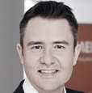Gerald Schönbucher is co-founder and CEO of Hitmeister, one of Germany’s leading multi-category internet marketplaces with a monthly revenue of several million Euros. He is a well-connected expert and speaker in ecommerce related topics. Gerald has more than eight years of strategic and hands-on ecommerce experience. Gerald is also an active business angel in several consumer internet companies. Gerald holds a graduate business degree and a PhD in Entrepreneurship, both from WHU – Otto Beisheim School of Management. He took graduate business classes at the University of Michigan Stephen M. Ross School of Business and at Sorbonne University. Before launching Hitmeister he has gained experience at Deutsche Bank, BMW, Unilever and Jamster!
Felix Stäritz Excelling in complex and and high pressure environments, a doer and achiever, serial entrepreneur from age 16 onwards, previous management consultant for boutique and top consultancies in high-tech and telecommunications, a speaker and visionary. Co-Founder and CEO of KochAbo, having set up the leading e-food concept in 5 countries within 12 months. Business angel and advisor to start ups.
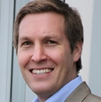Tim Schumacher
is the Co-Founder and former long-term CEO of Sedo.com (currently € 130 M in Revenue and 350 employees). He’s now involved as a Business Angel in various start-ups, among it Aklamio, Stuffle, Enbreeze and Netzwelt, and also building his next company.
Felix Stäritz Excelling in complex and and high pressure environments, a doer and achiever, serial entrepreneur from age 16 onwards, previous management consultant for boutique and top consultancies in high-tech and telecommunications, a speaker and visionary. Co-Founder and CEO of KochAbo, having set up the leading e-food concept in 5 countries within 12 months. Business angel and advisor to start ups.
Wencke Schwarz
Wencke "Wes" Schwarz >>>Menschen im Fokus<<< is an expert for human factors, customer orientation and Design Thinking. As a passionate psychologist, coach and consultant, she supports people by developing their talents, communicate better and work effectively in collaborative teams. Wencke loves to help people to get to know themselves better, think out of the box and develop creative and customer orientated ideas and solutions. Due to her heart for founders and start-ups, she work as a speaker at deGUT and the BPW Berlin and coaches new entrepreneurs in NRW and Berlin. In her freetime Wencke likes having good conversations, travelling, good food, beachvolleyball and Borussia Dortmund.
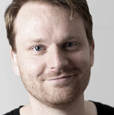Tobias Schiwek
Tobias is founder of endore.me, a platform supported by notable investors helping artists to manage and monetize their fan base. Coding and launching some lousy projects at the age of 16, simfy was the first serious web startup he joined during his time at university. Millions of customers (and venture capital) later he founded a family and his new company. He holds a master’s degree in Business Economics and Political Science from the universities of Mannheim and Milan, Italy. Before he was bitten by the startup bug, Tobias worked in journalism and strategic management consulting. He’s a passionate fan of football (Kaiserslautern, sorry) and a passionate father of a son.
Christian Solmecke
Christian Solmecke (39) is a partner at the law firm WILDE BEUGER SOLMECKE(Cologne). He is the author of numerous legal publications in the area of internet and IT law. He is also an associate lecturer for social media law at the Cologne University of Applied Sciences. His YouTube channel, where he presents complex legal issues in short video clips in a user-friendly way, has over 22,000 fans.
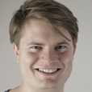Tobias Zumbült
Tobias is experienced in Finance and Onlinemarketing. He helped to build up the Online Music Platform tape.tv. After founding his own Video-Platform Tobi is now co-founder and CFO of Tollabox.de. One of the fastest growing subscription commerce startups in Germany.
 Gerrit Schumann
Gerrit Schumann
Gerrit is a serial entrepreneur with a passion for driving disruptive business models in the digital world. In 1996, as an early Internet pioneer, he started the global payment and e-commerce company element 5, enabling software developers around the world to switch to direct-to-consumer distribution on the Internet. Since 2007, as co-founder and CEO of simfy he has been focussing on the music industry, driving the massive paradigm shift from product ownership to a flat rate access model via music streaming. Gerrit is also an active business angel, invested in several startup software and Internet companies.
 Marc Sieberger
Marc Sieberger
Founder & COO/CFO Doo. As entrepreneur and investor Marc knows both sides of the table. In his role as co-founder of e42 Marc enjoys working with dedicated, visionary founders to create innovative products and disruptive business models. e42 has seed funded and coached companies like 6Wunderkinder, kaufDA, myTaxi and Robot Media. Prior to e42, Marc led ip.labs as COO & CFO from a startup to an established worldwide leading photo service software provider and its acquisition by FUJIFILM Corp. In 2011 he co-founded doo and set off on his next mission - reinvent the way we work with documents and information. Marc is a frequent speaker at international tech events. He's talking about "Business model design in the app-economy".
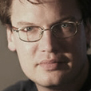Oliver Thylmann
Husband, father of 2 kids, Developer Whisperer and First Adopter, Oliver has founded companies since university times, doing system administration, running statistics services, spamming search engines, bidding CPC on GoTo and running the biggest BeOS News Site. Then he built the technology behind what is today Ligatus as an Intrapreneur before finishing his MBA and founding Ormigo together with Henning Lange in 2005. Selling Ormigo to a yellow pages company in 2010, both started Adcloud in 2008, selling it to DPDHL in 2011 and continuing to run the company until March of this year. After a few Angel Investments in the past two years, Henning and Oliver are at it again, working on their next big idea.
 Nils Zündorf
Nils Zündorf
Nils is mentor of several startups and founder of gruenderkey.de - an exclusive club for founders. One of the biggest issues of Startups is miscommunication of tech and biz people. This festival should bring them closer together! Finding CTOs and other technical talent– avoiding the most common misconceptions - The majority of startups focus on technical innovation, or are at least based on a scaleable and complex technical infrastructure. The high competition for excellent hackers and a multitalented CTO often results in a never ending hiring process. Learn how to attract these talents without high paychecks or a safe future. What are the pains and gains of people with technical backgrounds? Nils Zündorf will talk about the most common pitfalls and explain with practical examples and guerrilla marketing techniques how to solve them.
Your ticket includes an invitation to the Startup Breakfast
on Wednesday. Enjoy a tasty croissant and a hot coffee in a
laid-back atmosphere before to kick off a long day of
conference. Connect and chat with Cologne's startup scene. We
are looking forward to meeting you there.
Short talks by the attendees. Only a limited number of open slots, free choice of subject. Time is limited to five minutes.
Short talks, discussing best practices featuring selected startups and entrepreneurs. Meet & greet with self-made entrepreneurs in an intimate atmosphere afterwards.
Discussion and presentation of innovative and successful
business ideas and models behind projects featured in the tracks
of the event. Discover and discuss the business models behind
„Quadcopters“, „Anykeys“ and „3D-Printing“. What kind business
idea can be successful in NRW/Germany?
- Evaluation and development of business models in pre-seed
Discussions and presentations of advantages, disadvantages
and risks of various forms of financing. Where lies the future
of financing? Why Exits? Bootstrapping vs. Investors vs. public
funds. Alternative forms of financing like cooperations or crowd
funding. How to minimize risks and what are low-risk business
models?
- Finding CTO’s and other technical talent – avoiding the most common misconceptions
- Why hackers are the better founders.
- There’s no ‘I’ in ‘Team’ - Every startup / founder depends on Biz AND Tech
- Who needs (German) hackers anyway?! The case for offshore development.

What: Meetup, Professionals, Finance, Business, Talks
Date: June 20rd
Time: 3 PM - 8 PM
Entrance: 50 EUR (WdC members free)
At the Web de Cologne event on June 20, 2013 VCs and entrepreneurs from Cologne and NRW will discuss “Sustainable Entrepreneurship vs. Exit Driven Growth“
Afterwards, Web de Cologne invites all attendees to join the networking party on the roof terrace of Thyssen Stiftung.
Speakers
Daniel Attallah
Founder & CEO Pixum. Born in 1963, Daniel looks back on a successful management career spanning over 20 years, with focus on marketing and sales in various B2B and B2C high-tech companies. In 2000, he founded Pixum. For over 7 years now, his main focus has been on internet marketing. As Pixum's managing director, he is responsible for marketing, business development, investor relations, finances and personnel. A CEO's main task is interacting & I'm from Cologne - so Interactive Cologne is literally my event.
 Christian Blume
Christian Blume
Christian Blume is a founding member and the CEO of cleverbridge. In 2005, he co-founded cleverbridge as a bootstrapped company and has played an integral role in growing the organization to become a leading e-commerce provider for the software industry. Today, cleverbridge is a global organization with over 240 employees with offices in Cologne, Germany, Chicago & San Francisco, USA and Tokyo, Japan. As a seasoned executive with a background in marketing, business development and product management, Christian has more than a decade of experience in managing and evolving start-ups to global companies. He is responsible for strategy development at cleverbridge, always looking for the next opportunity to grow the business.
Jörg Binnenbrücker
Jörg earned a degree in law and economics from the University of Bonn and is a licensed lawyer. He was a senior investment manager at High-Tech Gründerfonds investing in early-stage companies from the ICT sector. Prior to that, he worked as a manager for PriceWaterhouseCoopers. Jörg successfully led the investment business of M. DuMont Schauberg as founding partner and CEO, thereby significantly contributing to the development of digital strategy at the publishing house. At the end of 2012 he founded the Multi- Corporate Fund Capnamic Ventures which he leads as managing partner.
An active business angel and entrepreneur himself Jörg is constantly striving to improve the conditions for startups and strengthen the entrepreneurial spirit in our society. Being an expert within early stage investments he was awarded the title „Investor of the Decade“ by the German magazine Gründerszene in 2011.
Dr. Lorenz Gräf
Dr. Lorenz Graef is the founder of the internet company Globalpark. As an entrepreneur he leads his business to success and establishes it as an international renowned company. In fall 2011 he left the company and concentrated his interests in the Familie Graef Holding GmbH (FGH). In November 2012 Dr. Lorenz Graef founded STARTPLATZ, a Cologne based hub for entrepreneurs in the Rhineland area. With STARTPLATZ he wants to accelerate high potential startups and lead them to success. Since 1988 he does research in the field of social science informatics and online market research. He is an expert for online based interaction and communication as well as author of different articles and textbooks. Further Dr.Lorenz Graef is co-founder oft he DGOF e.V. (German association of online-research) and was member of the board from 1997 until 2004. By founding this holding he develops his own projects and supports ambitious startups with capital and his expertise. As founder of the accelarator STARTPLATZ our aim is to bring founders and developers together and establish the start-up culture in Cologne. I am glad to join the Interactive Cologne and get in touch with the crowd.
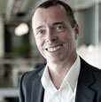Joachim Vranken
Joachim Vranken is the founding CEO of kalaydo since 2006 and has held different management positions in the media industry for more than 25 years. He is spokesman of Web de Cologne an association of leading internet companies in the metropolitan areas of Cologne. He is involved in Interactive Cologne from the first moment.
Marco Zingler
Since 2001, Marco Zingler is Managing Director at denkwerk. For more than 14 years, he has worked in the multimedia industry. The studied historian and political scientist was Managing Director of oneview, one of Germany's first Social Networks, from 1999 to 2003 With partners, Marco Zingler founded WEBTRAVEL GmbH in 2004 and leaded the company until 2008. Since 2006, Marco Zingler is the spokesman for the Fachgruppe Agenturen within the BVDW e.V, a member of the general board and since 2009 member of the expert council in the organisation. In 2009, Marco Zingler was appointed to the governmental Media Advisory Board of North Rhine-Westphalia.
About Web de Cologne
Web de Cologne e.V. is a Cologne-based initiative of companies of the internet economy. Since mid-2009, its members meet regularly on networking events to discuss topics of the digital and online industry, intensify existing contacts and forge new ones. Since May 2012, the initiative is an association to represent the interests of the internet economy. Web de Cologne has the goal to connect and promote the internet economy in the Cologne area.